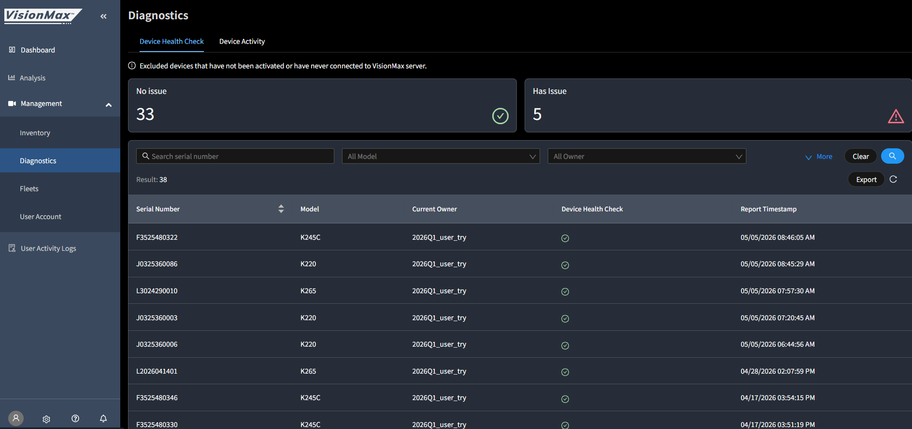

Platform Science × MiTAC VisionMax
美國車隊軟體商 Platform Science 評估 MiTAC VisionMax SDK 與 CDR 攝影機整合，目標建立 cloud-to-cloud 平台夥伴關係。
| 姓名 | 角色 |
|---|---|
| Vinicius Francisquinho | Engineering Director, Video Safety 今年初新任，主要技術決策者 |
| Vikram Jayaraman | 前期聯絡窗口 |
| 姓名 | 角色 |
|---|---|
| Stark Yang（楊永吉） | Director, Video Telematics |
| Brian Chienlee（李健） | VisionMax 解決方案負責人 |
| Conant Ho（何肇峯） | 技術 PM，主要對外窗口 |
| Righter Song（宋祐全） | RD Engineer，韌體操作 |
| Paul SP Lee（李世博） | PS Account Sales |
Stark 將 Brian 加入串列，請 Vikram 分享 Platform Science 的 camera project plan。
Vikram 表達對 K265 進行 additional validation，並提出需求：
- multi-channel 支援
- CAN decoding
- non-China manufacturing
Brian 為 Vinicius 建立 Production 帳號，提供 API KEY、Portal 連結、API 文件。
Righter 提供 device update 文件附件。
Vinicius 主動提案、自我介紹為新任 Engineering Director。
Conant 安排，確認 4/29 召開 Kickoff 會議。
Vinicius 回報 K265 無法加入 VisionMax portal，提供 IMEI/SN 後，Righter 當日處理完成。
- K265: IMEI 353995720096134 / SN L1225380005
- K245: IMEI 357216578001266 / SN F4723090088
會後 Vinicius 提出行動清單：SDK 文件、簡報、設備報價、下單流程。
Conant 提供 CDR roadmap 與 SDK 連結。
Vinicius 詢問 K265 / K245 / K246 Orion 是否共用同一 SDK。
Conant 確認 SDK 通用於所有 CDR 機型，model-specific 差異文件中已標注。
K245：成功 — 已完成 OEM image 修改、替換錄影 app、資料傳輸至自有 server。
K265：失敗 — portal 仍無法運作，推測 image 有誤。
初期整合優先走 cloud-to-cloud 路線，並再次催促報價。
5/11 02:31 Kenny 交付
vmRTC/1.0.4 JS lib(visionmaxfleet.com/lib/vmRTC/1.0.4/...)。5/11 22:03 Vinicius 回覆「Thanks, I will start running some tests with it」 — V1.0.4 testing loop close。
5/12 10:08 Righter 通知 K265 OTA profile 已設好(配 VMX-7287 K265 2026Q1 region build Resolved)。
5/13 06:2X Vinicius 回報:OTA + SDK Live Stream 都正常,但 portal 顯示 ADAS Failure(K265 L1225380005),reboot 無效。
5/13 11:41 Righter reply:install + 30 km/h drive on lane-markings + 綠框 horizon alignment 附圖。
Kenny PM 判斷:Righter 已答核心,不另回 thread(避免 PM 補刀 RD)。內部 cross-link 此事件到 VMX-7404 同根因 thread — 跨客戶證據鏈第三例(Kenny 自測 + Webfleet HAWK-501 + PS K265)。
| 型號 | 代號 | 狀態 |
|---|---|---|
| K220 | Sprint | 可用 |
| K245 / K245c | Gemini SE | 測試成功 |
| K246 | Orion | 詢問中 |
| K265 | EVO | Image 卡關 |
| K425 | Lightmetrics→MiTAC | 2026 Q1 測試中 |
| Master Portal | portal.visionmaxfleet.com |
| Fleet Portal | visionmaxfleet.com |
| API Docs | visionmax.redocly.app |
| SDK | Google Drive 連結 |
Vinicius 5/7 confirmed K265 image LM 版本不能透過 SD update 升到 VisionMax(Righter 解釋)— 設備 F4723090033 已加進 inventory(Master Portal),後續從 Diagnostics 監控狀態。



- Righter 為 K265 提供 image 修正流程（對齊先前提供 K245 的版本）—— Vinicius 判斷 K265 image 有誤，導致無法在 portal 運作。急迫
- Conant/Sales 提供 Vinicius 要求的 設備報價 與 下單流程（Vinicius 已二次催促：4/29 與 5/4）急迫
- Brian/RD 2026 Q1 K425 image 完成後，主動通知 Platform Science 更新。
- 待釐清 確認 Vinicius 最終商業模式：純 cloud-to-cloud API 整合 vs. OEM image 客製化。
- 待釐清 K246 Orion 是否列入採購清單。
- SDK 評價正面：「comprehensive」「worked nicely」
- K245 OEM image 修改完成，代表整合能力強
- 1 個月內完成接洽→測試→採購意向，動能快速
- test truck 安裝計畫，具備擴大採購潛力
- cloud-to-cloud 路線暗示長期平台夥伴關係
- K265 image/portal 問題重複出現，恐影響客戶信任
- 報價持續未回，可能導致決策停擺
- non-China manufacturing 要求是潛在否決條件
- cloud-to-cloud vs OEM 雙路線並行，整合範圍不確定
| 表面需求 | 背後真正在意的事 |
|---|---|
| 需要 SDK 文件 | 在內部評估 MiTAC 是否值得深度投入 |
| 詢問報價 | 想確認 MiTAC 有意願正式做生意，不只是做 POC |
| K265 portal 問題 | 在測試 MiTAC 的技術支援反應速度 |
| 提到 cloud-to-cloud | 希望與 MiTAC 是平台對平台的夥伴關係，而非純硬體採購 |
技術型決策者，週末自己動手測試 SDK——他同時是評估者也是執行者。兩度催促報價說明他內部已有採購壓力，主動性高。用「初期實作」描述 cloud-to-cloud，暗示後續還有更深合作規劃。
CONNECTSOURCE × Passenger Blurring
澳洲 MiTAC AU(MAU)Wendy / Cary / Elvis 代 reseller 客戶提出乘客模糊化 AI 需求。2026-05-11 下午 Brian 拍板 Q2 scope:BMS Blurring 整合進 VMX cloud + Release API doc 給 Connect Source(API only)· Auto Sense UI 是另案 long term · Q2 release notes end of June 給 MAU。
- 5/13 早上 Kenny 推 4-step flow(Master → Fleet → Event Detail switch → Download 雙版本)→ 對 Elvis 提問:「on-demand 流程符合需求嗎?」
- Elvis 09:18 pushback:Step 1+2 接受 / Step 3 質疑必要性(BMS 是否支援 per-event?)/ Step 4 質疑雙版本(bandwidth 浪費)
- Spencer rationale:Step 3 是 cost / storage 控制點,不是冗餘 — 拿掉 = always-on 模式,所有 event 自動跑 AI + 雙版本 storage
- Cost model 三輪修訂:v1 ❌ 誤引 AWS Rekognition($0.10/min,實際我們用自家 AI)→ v2 ✅ 校正 MiTAC AI + AWS S3 → v3 ✅ storage 倍數重算(1.8× 不是 10×,因原始檔本來就會存)
- 關鍵 framing:不承諾倍數 — 用「scales meaningfully higher — subject to Spencer's quote」+ 引用 Brian 4/24 原話「separate commercial arrangement」
- Profitability sensitivity(內部):break-even 在 ~8× · On-demand 絕對賺(88% margin)· Always-on 大概率還是賺(除非 pure linear scaling)
- Kenny v3 訊息送出(中午)· 結尾兩個 confirm 問題:Cost model(on-demand vs always-on)+ Download UX(blurred-only default vs 雙版本)
- Cost model 偏好:on-demand(Step 3 必要、baseline 合約)vs always-on(Step 3 拿掉、scales meaningfully higher、需另談合約)
- Download UX 偏好:下載按鈕 default 只給模糊版,還是雙版本讓使用者選?(原始版一律保留 server 端供 audit)
- Trigger 後續:客戶選 always-on → 跟 Brian 確認正式 quote · 客戶選 download UX 改 → 加入 VMX-7458 scope
- Q2 In Scope:(1) BMS Blurring 整合進 VisionMax cloud · (2) Release API doc 給 Connect Source(MAU API integrated 客戶)
- Connect Source = API only · 不需要 UI portal toggle · API 自己可控任何 video / fleet / contract fleet · 不分 fleet vs contract fleet permission
- Auto Sense(MAU 另一客戶)= 走 UI · 2000+ devices on VMX web UI · 要 GUI design 才能加 Blurring 控制 · Q2 不做(long term)
- Option A vs B(早上 Spencer 框架)在 API 層其實是同一條 flow — Kenny 會議裡講出來但太晚太含糊 · Brian take over 釐清
- Monthly subscription report · Brian「not the target for now, future planning」· **Ticket #4 暫不開**,post-Q2 production 後有真實 usage 資料再開新單
- 時程:Staging end of June / Production end of July / Q2 release notes end of June 給 MAU(對外發布前)
- Elvis 訊號:「Don't want to be surprised again」· 未來 deployment 前要 notify · Q1 release note 對 MAU 客戶部署前先安排
| Ticket | Summary | Type / Priority | Assignee | Due / Timeline |
|---|---|---|---|---|
| VMX-7457 |
[API] Integrate BMS Blurring functionality into VisionMax cloud 2 deliverables in one ticket(Kenny 加 comment 釐清):
|
Task · 2 - Medium | Spencer | 30/Jun/2026(staging · ticket Due) |
| VMX-7458 | [VisionMax] [GUI] Blurring control UI on Master/Fleet Portal for non-API customers | Task · 2 - Medium | Kenny | Q2 feasibility · 實作 long-term |
| (暫不開) | Monthly subscription report — Blurring tracking | — | — | Post-production · 等真實 usage 資料再開新單 |
- Kenny 2pm sync 後起草 follow-up email(Q1+Q2 + ticket link + 4 條 timeline + monthly report 救球)→ Brian 第一次回「不要發」
- Kenny ping Brian 確認 → Brian 二次回應:「不用那麼麻煩,他看我 Jira 寫清楚了」
- 真實 calibration:Jira ticket = 對外 commitment 已建立 · external email 重複 Jira 內容是 redundant · 客戶 chase 時口頭/Teams 答即可
- 對 Kenny 開單質量的肯定 — VMX-7457 拆 Deliverable A/B comment 動作有效 · 書面工作 > 口頭工作(今天 execution gap 失分被補回一半)
- 新規則(critical-facts-log v2):內部 Jira / case file 寫清楚 = SSOT 已建立 · 不需重複做 external 文件 · 客戶 chase 時根據 Jira 內容口頭回
- Email draft 不丟 · 存在 case file § 8.8 · 預期本週 Cary/Wendy chase 用 § 8.8 口頭答覆模板
- 準備層完整(HTML 圖 / sound-bites / push back 預期 / DON'T SAY 警示)
- 但會議現場幾乎沒 deploy:沒 share screen / 開場違反 DON'T SAY / Monthly report 一句話 dismiss(違反自己 HTML 寫的 sales pitch)
- Brian 進場 5 分鐘 take over · 主導權失分 · 對「升格主對接 PM」定位造成傷害
- 真實問題不是 prep gap,是 execution gap — 準備了沒 deploy = 沒準備
- 下次 protocol:T-30min 獨自地方 drill(verbatim 念 sound-bite / 指圖練習 / 念 DON'T SAY)· 會議室只帶 Cary 版 HTML · Kenny 版手機備用
- Kenny 升格主對接 PM — Cary「we will be stalking you」
- Q2 portal path 校正:Master Portal 路徑只到 main fleet 級,需 per-contract-fleet 粒度
- 提出兩條路徑:(A) Master 補視圖 vs (B) Fleet Portal 加 UI ← 已被 5/11 下午 API-only 路徑取代
- Q1 客戶用 API 直接整合,Kenny 問 Spencer 能否 share API doc ← 已開 VMX-7457
| 姓名 | 角色 | 立場 |
|---|---|---|
| Wendy Hammond | MiTAC AU 業務（wendy.hammond@mitac.com.au）— 5/8 解密身份,代 reseller 客戶端傳達需求 | 業務端 |
| Cary Lo | MiTAC AU 業務 / Account Manager — 跟 Wendy 同部門,5/8 sync-up 主對話人 | 業務端 |
| Elvis Tran | MiTAC AU PM — 5/8 sync-up 加入,負責 release notes review,技術糾正 Q2 portal path | 業務端 |
| Brian Chienlee（李健） | VisionMax 解決方案負責人（MiTAC HQ 產品端） | 產品端 |
| Spencer Su（蘇家弘） | Cloud / API team lead（HQ）— Q1 API doc / Q2 portal 路徑可實作性 owner | 產品端 |
| Pokai (Kenny) Huang | Technical Support, Brian's team @ Taipei — 5/7 對外回信 / 5/8 主動 reach out 開 sync,目前 MiTAC AU 線主對接 PM | 主對接 |
財務上具備可行性，前提是 $6/月/連線的定價模型已涵蓋 AWS 成本分攤（$700/月 ÷ 1,000 連線 = $0.7/月/連線）。
Wendy 向 Brian 提出馬來西亞客戶的 Passenger Blurring 需求，說明隱私法規與工會背景、合約規模（1,165 台、1,000 連線、36 個月）。
Cary Lo 提問：1,165 台 HW 月收益約 $1,165 USD；AWS 成本 $700/月 是否已計入定價？規模是否符合功能適用條件？
Brian 回覆：確認 AWS 成本 $700/月；此功能原為 BMS 客戶開發，整合至 CONNECTSOURCE 需額外工作；目標 Q2 2026（七月）。
Wendy 表達不滿:長期無路線圖同步會議、業務端無法對客戶承諾。
Brian 回覆:分享 AI Feature Roadmap 簡報與需求追蹤 Sheets,確認七月為目標。
(1) Passenger-only blurring (driver 保留) 是否可行?
(2) 可否套用到特定 Fleet / Contract Fleet?
(3) 能否安排 Teams customer session?
Q1:Yes feasible — European deployment API 已支援 driver/passenger 獨立 blurring(BMS 內部 API 為依據)
Q2:Path 在 Master Portal > Management > Fleets > (select) > Fleet Detail > Configurations > (new) Blurring,per-Fleet 粒度
Q3:Fully supportive,先內部對齊 Q1/Q2
Q2 portal path 被 Elvis 螢幕分享現場糾正:Master Portal 路徑只到 main fleet 級,動一個 = 影響所有 contract fleets,**沒粒度**。客戶結構需 per-contract-fleet 粒度(沿用 Live User pattern)。
修正後雙路徑:(A) Master Portal 補 contract fleet 視圖 隱私問題 / (B) Fleet Portal 加 per-contract-fleet UI(沿用 Live User)
Q1 API doc:Cary 追問「what can I share with my customer?」客戶妥協用 API,Kenny 承諾問 Spencer 能否 share 內部 API doc
Cary 對 Kenny 評價:「very refreshing」/「we will be stalking you」— Kenny 升格 MiTAC AU 線主對接 PM
Q2 In Scope:BMS Blurring 整合進 VMX cloud + Release API doc 給 Connect Source
Connect Source = API only(不需 UI portal toggle)· Auto Sense UI 是 long-term 另案
時程:Staging 30/Jun · Production end of July · Q2 release notes end of June 給 MAU
Jira:VMX-7457(Spencer · cloud integration + API doc share)/ VMX-7458(Kenny · Auto Sense UI 長期)
傍晚 Brian 回應「Jira = SSOT」:Kenny 不用發 follow-up email,Jira 寫清楚 = 對外 commitment 已建立
Elvis 09:18 pushback:Step 3 質疑必要性(BMS 是否支援 per-event?)+ Step 4 質疑 bandwidth
Spencer 揭露:Step 3 = cost / storage 控制點(拿掉 = always-on,~1.8× storage + 10× AI 處理量)
三輪修訂:v1 ❌ 誤引 AWS Rekognition → v2 ✅ 校正自家 AI + AWS S3 → v3 ✅ storage 倍數重算(1.8× 不是 10×)
Kenny 中午送出 v3 · 用「scales meaningfully higher — subject to Spencer's quote」+ 兩個 confirm 問題(cost mode + download UX)· 等客戶回
Master Portal > Management > Fleets > (select Fleet) > Fleet Detail > Configurations > (new) Blurring

這條路徑只能控制 main fleet 級,動一個 = main fleet + 所有 contract fleets 一起套用,沒 per-contract-fleet 粒度。客戶結構(Australia 1 fleet + 多 reseller contract fleets)必須 pinpoint 特定 contract fleet。
(A) Master Portal 補 contract fleet 視圖 — 隱私問題(contract fleet 不見得想讓上層 dealer 看到)
(B) Fleet Portal 加 per-contract-fleet Blurring config UI — 沿用 Live User pattern(現有 Fleet Portal 已示範可行)
| 面向 | Wendy（業務端）的期望 | Brian（產品端）的現實 |
|---|---|---|
| 功能時程 | 盡快上線，可對客戶承諾 | 需額外開發，Q2 2026 / 七月 |
| 功能範圍 | CONNECTSOURCE 可直接使用 | 需針對 CONNECTSOURCE 重新整合 |
| 資訊頻率 | 定期路線圖同步 | 被動回應，無主動推播機制 |
| 承諾精度 | 具體可執行的日期 | 「Q2 / 七月」（粗粒度） |
業務端不知道路線圖，只能被動等待。Wendy 的情緒反應背後是系統性的溝通斷裂，不是個人關係問題。
Passenger Blurring 對 BMS 可用，但對 CONNECTSOURCE 需要重新整合。這個差異沒有在早期被清楚傳達，導致業務端誤判功能就緒程度。
「Q2 2026 / 七月」對業務端太粗，更有效的說法：「六月確認可行性、七月開始整合測試、Q3 正式上線」。
$700/月 AWS 成本是否計入 $6/月/連線的定價？若未涵蓋，CONNECTSOURCE 報價結構需重新評估。
- Kenny 回 thread 校正 Q2 portal path — 不能裝沒事,Elvis 現場糾正了。明確提兩條路:(A) Master Portal 補 contract fleet 視圖 / (B) Fleet Portal 加 per-contract-fleet UI(Live User pattern)。草稿已擬,待 Kenny 確認後寄出
- Kenny → Spencer 確認 Blurring API doc 能否 share 給 CONNECTSOURCE 對外用(暫用,在前端 UI 出來前)
- Kenny → Brian + Spencer 對齊 contract-fleet-level Blurring config 走 (A) 還是 (B)。下個 sync 前要拍板
- Brian 提供 Passenger Blurring 的具體里程碑節點(不只說「七月」),讓業務端可以管理客戶預期。
- Brian 確認 $6/月/連線的定價模型是否已包含 $700/月 AWS 成本分攤。
- Brian 建立定期 roadmap sync 機制(建議每季一次),確保澳洲業務端有常態資訊流。5/4 已部分執行 — Brian 給 Wendy Sheet + AI Roadmap doc 連結
- Wendy 向馬來西亞客戶溝通:Q2 2026 / 七月為目標,待 Brian 提供更細里程碑後再確認。
- Cary Lo 確認 1,165 台裝置是否符合 Passenger Blurring 功能最小部署規模條件。
- Cary Lo 釐清 AWS 成本分攤是否已反映在 CONNECTSOURCE 現行定價結構中。
Brian 在下次回信中把「七月」轉化為可驗證的里程碑：
「預計六月底確認整合方案可行性，七月啟動開發，Q3 結束前提供 CONNECTSOURCE 測試版本。任何變動我會提前通知。」
關鍵在「任何變動我會提前通知」——這才是 Wendy 真正需要的承諾。
建立 VisionMax Roadmap Sync 定期會議（每季一次），澳洲、台灣業務端與產品端共同參與，輸出一頁簡報說明：
• 已上線功能
• 進行中的功能（含預計里程碑）
• 規劃中但未承諾的功能
若 Passenger Blurring 成為標準功能，需在 CONNECTSOURCE 的定價模型中明確將 AWS 成本納入，避免每次都需要個案討論。
跨案例 PM 策略總結
從 Platform Science 與 CONNECTSOURCE 兩個事件中，提煉出 R&D PM 在對外客戶溝通與內部協作中的核心策略原則。
研發 PM 不是在承諾「結果」，而是在承諾「透明度」。你沒辦法保證功能七月上線，但你可以保證：七月到的時候，客戶不會是第一個知道「做不到」的人。
| 承諾類型 | 說法範例 | 風險程度 | 適用情境 |
|---|---|---|---|
| 功能上線日期 | 「七月上線」 | 高風險 | 研發確定性極高時才用 |
| 里程碑節點 | 「六月底給你 MVP 評估結果」 | 中風險 | 階段性評估或測試版 |
| 評估時程 | 「兩週內告訴你這功能能不能做」 | 低風險 | 需求確認初期 |
| 資訊更新頻率 | 「每月底給你一次進度更新」 | 極低風險 | 任何時期都可承諾 |
- 強調功能有多強大
- 只說商業故事
- 等客戶問了才回應
- 技術問題模糊帶過
- 讓報價「等一下」
- 提供精準的技術文件
- 清楚說明功能限制
- 跟上客戶的測試節奏
- 主動定義「下一步行動 + Owner + 時限」
- 報價作為信任指標，早給
Vinicius 這類技術型決策者，每次互動都在測試 MiTAC 的反應速度與專業度。K265 portal 問題對他來說不只是 bug，是在評估「這個合作夥伴值不值得依賴」。
| 業務端的感受 | 真正的根因 | PM 的解法 |
|---|---|---|
| 「不知道功能什麼時候出」 | 產品端沒有主動輸出路線圖資訊 | 建立定期 roadmap sync（每季） |
| 「不知道能不能對客戶承諾」 | 承諾層次太粗，沒有里程碑 | 提供「確認日期」而非「上線日期」 |
| 「功能說好有，但用不了」 | 原型 ≠ 可交付功能，差異未傳達 | 早期清楚說明功能就緒條件 |
| 「感覺被蒙在鼓裡」 | 無常態資訊流，只有被動回應 | 主動推播，即使沒有進展也要說 |
業務端的不滿通常是資訊不對稱造成的，不是情緒問題。PM 有責任主動輸出資訊，即使功能沒有進展，也要讓業務端知道「我們知道這件事，這是目前狀態」。
Honeywell MiddleEast × MiTAC VisionMax
Stark 5/8 23:27 啟動的 CDR 新機會 · 第一單 5 月 6,000 pcs(K220 + K265)· 要做 white-label Honeywell VMX portal · Brian 點 Kenny 進 VMX setup line。
- 5/11 樣機出件:K220 × 1 + K265 × 1,含 open wires cable / OBD power cable / 點菸頭 cable,跟 Brian 申請 webbing SIM card。後續再準備 K220 × 4 + K265 × 4 set。
- 機構評估:PM / 機構討論機構殼上能否貼 Honeywell logo sticker(或更好做法)。
- Setup VisionMax Honeywell testing account:Master & Fleet portal,sample import 至該 fleet 下,Login logo 換 Honeywell logo(white-label 雙 portal)。
- K220 / K265 tier pricing:5/11 週一上午會議討論,客戶要求第一單 5 月 6K pcs 量做報價。
Brian 把 Kenny 加進 list → VisionMax setup(Master & Fleet portal + white-label login logo + sample import)是 Kenny 實際參與點。對應 Plan Type / Contract Fleet 結構工作。
| 任務 | 對應 portal 操作 | 已知技術依據 |
|---|---|---|
| 建 Honeywell main fleet | Master Portal > Management > Fleets > Create | 5/8 Sync-up 已 walk 過 |
| 換 login logo 為 Honeywell | Master Portal > (white-label config 位置) | 待確認:是否影響 Plan Type |
| Sample import 至 Honeywell fleet | Master Portal > (Inventory) | K220 + K265 SN 拿到後 |
| Plan type 對應 CDR + ADAS/DMS | Fleet Portal > Plan Type config | 跟 Vinicius case 同議題,要問 Brian/Conant |
| 姓名 | 角色 |
|---|---|
| Stark Yang(楊永吉) | Video Telematics Director · 啟動者 · tier pricing 拍板 |
| Paul Lee(李世博) | Account Sales Manager · Honeywell 主對接 |
| Kevin Yhwang(王耀賢) | HW PM · Sample / cable / mounting kit |
| Brian Chienlee(李健) | VMX 解決方案 · SIM / VMX setup / 品質全責 |
| Kenny Huang(本人) | VMX setup 落地操作 |
| Righter Song(宋祐全) | RD inventory + firmware |
| Conant Ho(何肇峯) | 技術 PM 窗口 |
| 姓名 | 角色 |
|---|---|
| Alicia Shih(史才容) | Marketing · white-label brand 規劃 |
| Milky Ko(柯乃云) | Marketing |
| Spencer Su(蘇家弘) | Cloud / API lead(Brian FW 在 list) |
| Mori Jhang(張貴森) | HW 規格(Brian FW 在 list) |
| 風險 | 描述 | 對應動作 |
|---|---|---|
| White-label login logo 機制 KB 沒寫 | 不確定是 Master Portal 自助開關還是要 Spencer / Brian 後端改 config | 5/11 上午 Brian 對齊 |
| K220 + K265 tier pricing 沒拍板 | 客戶第一單 6K 要報價,定價人在 Stark / Paul | Kenny 不主導,但記下價格區間 |
| 5 月 6K 第一單交付風險 | 庫存 / 產能 / SIM 配發節奏 | Kevin + Brian SIM 申請 |
| 機殼貼 Honeywell logo | 是否有 MOQ / 客製週期 | PM/機構 評估 |
| 跟 Vinicius / PS 機型重疊 | K220 + K265 也是 PS 測試機種,產能 / firmware 版本要對齊 | Brian / Conant 統一管 |
| K265 LM 版 SD update 限制 | 架構限制:LM 版不能用 SD update 升 VMX 版 → 6K 出貨必須出廠就是 VMX 版 firmware | Righter / 製造端確認 |
- 上午跟 Brian 對齊 Kenny 在 VMX setup 的具體 step
- 確認 white-label login logo 機制(自助 / 後端 config / 開發)
- 確認 Honeywell fleet 的 Plan Type(對應 ADAS/DMS / Live View / Privacy Mode)
- 等 Righter / Kevin 把樣機 SN 給出來
- Honeywell fleet 建好 + 樣機 import + logo 換好(若可自助)
- 把 Honeywell setup 流程記下來 → 給 Phil 當 Master Portal manual 範例
- 確認 6K 出貨 firmware 版本一致
Weekly Summary · 每週對齊摘要
每週一上工前對齊上週 / 週末新增情境,結合 Outlook 5+ thread + Jira pending filter + Repo Δ 校正 + 下一週 P0/P1 動作清單。
Jira 164 票(原 137 + 27 同日新建,VMX-7407 Resolved)/ Lucy 交 Blurring 設計稿 / Vinicius JS lib V1.0.4 已測試 / Simon Wu Fleet Portal R02 review / NotebookLM 揭露 Model 11P/11L/26/V14 + 6/2 Fix Version 死線。
Outlook:Honeywell ME 啟動 / Vinicius Live View JS lib ✅ 5/11 已交 / QBR KPI 100K(差 15K)/ Device Listing app version / Fleet Portal manual。
Jira:VMX pending 180d 47 票分組 + HAWK opened 48 票(HAWK-582 Lens Cover 6 月 release 確認)。
歷史會議紀錄(5/6 Q2 Review / AI Weekly series · 5/7 + 5/11 / 5/8 Sync-up)在 PM 策略洞察 tab 與 AI Weekly series。
- 5/8 Sync up · Kenny / Cary / Elvis(21 min) — Q2 portal path 校正
- AI Weekly Roundup · Series(內部) — 🆕 5/11 最新:Model 11P/11L/26/V14 + 6/2 Fix Version · 5/7:17x 飲食 / LDWS / Lens Cover 單軌(校正)/ Yawning
- 5/6 Q2 Review — Brian 戰略翻案 / Single SKU+UVC hotfix
- 週一上工前掃 Outlook 上週開始的信件,挑 5 大 thread
- 查 Jira filter VMX pending 180 days(36523) 跟 Hawk opened(36458)
- 找出對 repo 既有 knowledge 的 Δ(新事實 / 校正 / 新案)
- 產出
weekly-summary/YYYY-MM-DD_week-of-XXX.md(source)+websiteview/docs/weekly-summary--YYYY-MM-DD_*.html(view) - 更新
knowledge/06_calibration-log/critical-facts-log.md+ 受影響的 knowledge files - 更新 memory
~/.claude/.../memory/MEMORY.md指向本週 summary 為「下個 Claude 先讀」